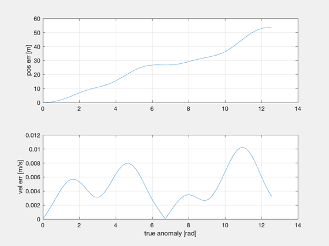
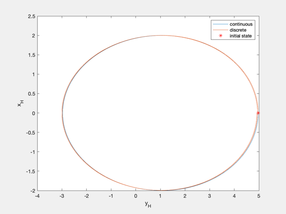

Compare discrete propagation with continuous solution.
This compares FFEccDiscreteHills.m with FFEccLawdensEqns.m
Since version 7. ------------------------------------------------------------------------ Usage: FFEccPropDemo; ------------------------------------------------------------------------ See also AC, Mag, UnwrapPhase, FFEccDiscreteHills, FFEccLawdensEqns, FFEccGoals2Hills, Nu2TimeDomain, Time2NuDomain, Nu2M ------------------------------------------------------------------------
%-------------------------------------------------------------------------- % Copyright (c) 2004 Princeton Satellite Systems, Inc. % All rights reserved. %-------------------------------------------------------------------------- e = 0.03; n = 1e-3; nS = 500; nu0 = 0; nOrb = 2; nuF = nOrb*2*pi; % evenly spaced true anomaly nu = linspace(nu0,nuF,nS+1); M = UnwrapPhase(Nu2M(e,nu)); t = (M-M(1))/n; % evenly spaced mean anomaly % M = linspace(Nu2M(e,nu0),nOrb*2*pi,nS+1); % nu = UnwrapPhase(M2Nu(e,M)); % t = (M-M(1))/n; g0 = struct('y0',1,'xMax',2,'nu_xMax',pi/2,'zMax',0.5,'nu_zMax',pi); xH0 = FFEccGoals2Hills( e, nu0, g0, n ); % compute Hills-frame states using discrete propagation aC = zeros(3,nS); xHDisc = FFEccDiscreteHills( e, n, xH0, nu0, aC, t ); % compute Hills-frame states using solution to continuous equations xH0nu = Time2NuDomain( xH0, n, e, nu0 ); xHCont = FFEccLawdensEqns( xH0nu, nu0, nu, e ); xHCont = Nu2TimeDomain( xHCont, n, e, nu ); % error xE = (xHCont - xHDisc)*1e3; figure subplot(211) plot(nu,Mag(xE(1:3,:))), grid on, ylabel('pos err [m]') subplot(212) plot(nu,Mag(xE(4:6,:))), grid on, ylabel('vel err [m/s]'), xlabel('true anomaly [rad]') figure, plot(xHCont(2,:),xHCont(1,:),xHDisc(2,:),xHDisc(1,:)), hold on plot(xHDisc(2,1),xHDisc(1,1),'r*'), xlabel('y_H'), ylabel('x_H') legend('continuous','discrete','initial state') %-------------------------------------- 